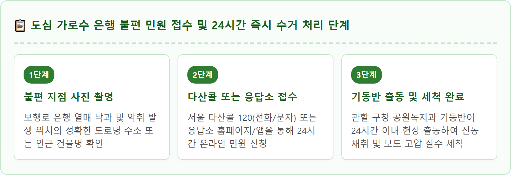
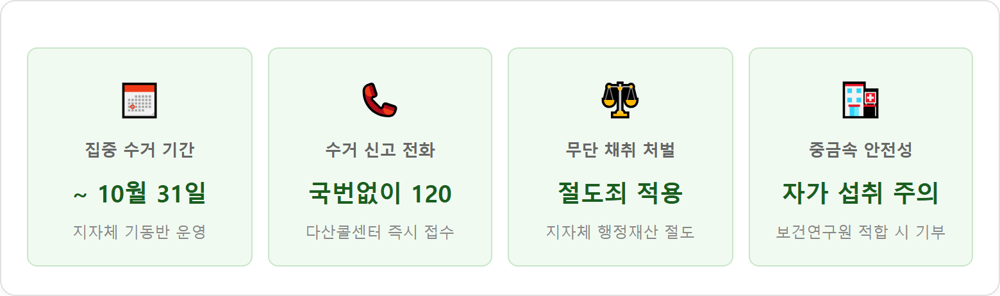

A photorealistic daytime documentary scene of municipal city workers harvesting autumn ginkgo nuts along a bustling urban sidewalk in Seoul, South Korea. Two workers wearing fluorescent high-visibility safety vests and hard hats operate a mechanical trunk shaker and a large specialized catch net underneath a tall mature yellow ginkgo tree to collect falling ginkgo seeds before they drop onto the ground. The sidewalk below shows a clean pedestrian walkway, while autumn traffic and modern city buildings line the background under a crisp golden October afternoon light. High dynamic range, realistic depth of field, sharp detail, journalistic street photography, 1:1 aspect ratio.
가을이 되면 도심 곳곳의 은행나무는 눈부신 노란 단풍으로 도심을 수놓으며 대기오염 물질과 중금속을 정화하는 훌륭한 공기청정기 역할을 수행합니다.
하지만 10월에 접어들어 암나무에 맺힌 은행 열매가 보행로와 차도로 떨어지면 상황은 급변합니다. 행인들의 발과 차량 바퀴에 짓밟히면서 뿜어내는 특유의 배설물 같은 악취 때문입니다.
은행 열매 겉껍질(육질 외종피)에는 빌로볼(Bilobol)과 은행산(Ginkgolic acid)이라는 독성 물질이 함유되어 있는데, 천적으로부터 씨앗을 보호하기 위해 지독한 냄새를 풍깁니다. 이 껍질이 피부에 닿으면 접촉성 피부염과 알레르기 수포를 유발하기도 합니다.
이에 따라 서울시를 비롯한 전국 지자체는 매년 9월 중순부터 10월 31일까지를 '은행 열매 집중 채취 기간'으로 정하고, 열매가 바닥에 떨어지기 전에 선제적으로 털어내는 전면 작전을 펼치고 있습니다.
과거에는 미화원들이 긴 대나무 장대로 나무를 흔들거나 나뭇가지를 쳐서 은행을 털었으나, 나무에 상처가 나고 보행자 안전사고 위험이 컸습니다.
최근 각 지자체는 굴삭기나 트럭에 장착된 '굴절 진동 수확기'를 적극 도입하고 있습니다. 나무 기둥에 충격 흡수 패드를 부착한 뒤 분당 수백 회의 미세 진동을 주면, 불과 1~2분 만에 나뭇가지 훼손 없이 잘 익은 열매만 우수수 떨어집니다.
또한 유동 인구가 많은 지하철역 출입구, 버스정류장, 횡단보도 주변 가로수에는 9월 초부터 깔때기 모양의 '낙과 방지 수거 그물망'을 미리 설치하여, 떨어진 열매가 보도블록에 닿지 않고 포켓에 모이도록 관리하고 있습니다.

가을철 어르신들이 비닐봉지와 장대를 들고 가로수 아래에서 은행을 줍거나 터는 모습을 흔히 볼 수 있습니다. 그러나 이는 엄연히 법적인 처벌 대상이 될 수 있습니다.
| 구분 | 형법상 절도죄 (제329조) | 산림자원법 및 경범죄처벌법 |
|---|---|---|
| 적용 행위 | 가로수 열매를 고의로 장대로 털거나 포대 자루에 담아 대량 채취하는 행위 | 가로수 가지를 부러뜨려 훼손하거나 소량의 떨어진 열매를 무단 수거하는 행위 |
| 소유권 귀속 | 가로수 및 그 부속물(열매)은 지자체의 행정재산 (공공 소유) | 공공시설 및 조경 시설 훼손 |
| 처벌 수위 | 6년 이하의 징역 또는 1천만 원 이하의 벌금 | 500만 원 이하의 과태료 또는 10만 원 이하 벌금·구류 |
| 판례 및 실무 | 판매 목적 대량 채취 시 절도죄 기소 처벌 (가정 소비용 소량 채취는 통상 계도 조치) |
나무를 흔들거나 훼손하여 가로수를 상하게 한 경우 손해배상 및 과태료 부과 |

일부 시민들은 "길에 버려진 자연산 은행인데 깨끗이 씻어 구워 먹으면 보약"이라고 생각하지만, 도로변 가로수 은행은 건강에 치명적일 수 있습니다.
• 자동차 배기가스와 타이어 분진 오염: 가로수는 하루 수만 대의 차량이 내뿜는 매연과 타이어 마모 분진, 브레이크 미세먼지를 직접 흡수합니다. 은행 껍질뿐만 아니라 과육 내부까지 납, 카드뮴 등 중금속이 침투할 가능성이 높습니다.
• 독성 물질 메틸피리독신(MPN) 함유: 은행은 본래 한 번에 많이 섭취하면 중추신경계 마비를 일으키는 독성 물질을 함유하고 있습니다. 성인 기준 하루 10알, 어린이 2~3알 이하로 섭취를 제한해야 하며, 오염된 도로변 은행은 복통과 구토를 유발할 위험이 큽니다.
집 앞 골목이나 매일 오가는 출퇴근길에 은행 열매가 짓이겨져 악취가 진동한다면 참지 말고 즉시 지자체에 수거를 요청해야 합니다.
서울시 25개 자치구에서 10월 한 달 동안 수거되는 은행 열매의 양은 무려 100~150톤에 이릅니다.
지자체는 수거한 은행 열매를 함부로 폐기하지 않고 자원화 절차를 거칩니다.
1. 보건환경연구원 중금속 정밀 검사: 수거된 열매는 겉껍질을 제거한 뒤 시 보건환경연구원에 의뢰하여 납, 카드뮴 등 유해 중금속 잔류 검사를 거칩니다.
2. 사회복지시설 및 경로당 기증: 검사 결과 '식용 적합 판정'을 받은 안전한 열매는 건조 및 가공을 거쳐 지역 경로당, 복지관, 저소득 가구에 겨울철 영양 간식으로 전액 무료 기부됩니다.
3. 퇴비 및 천연 살충제 활용: 부적합 판정을 받거나 파손된 열매는 가축 분뇨와 섞어 친환경 유기농 퇴비로 재활용하거나, 빌로볼 성분을 추출해 해충 방제용 천연 약제로 활용합니다.
은행나무는 겉모습만으로는 암수를 구별하기 어렵고, 식재 후 약 20~30년이 지나 열매가 열려야만 암나무임을 알 수 있는 특성이 있습니다.
• DNA 유전자 성감별 기술: 국립산림과학원이 어린 묘목 단계에서 암수를 100% 감별하는 DNA 분석법을 개발한 이후, 지자체는 가로수를 심을 때 열매가 맺히지 않는 '수나무'만 선별하여 심고 있습니다.
• 암나무 바꿔심기 프로젝트: 서울시는 도심 은행나무 가로수 10만여 그루 중 열매를 맺는 암나무 약 2만 7천 그루(26%)를 2026년까지 수나무로 전면 교체하거나 외곽 녹지대로 이식하는 사업을 연차별로 추진 중입니다.
출근길이나 외출 중 무심코 은행 열매를 밟아 신발 밑창에 악취가 배었다면 일반 비누나 물로는 냄새가 잘 지워지지 않습니다.
가을철 도심 가로수는 우리 모두가 함께 누리는 소중한 도시 숲이자 공공 자산입니다.
1. 도구 이용 채취 삼가기: 장대로 나무를 때리거나 발로 기둥을 차는 행위는 은행나무 수피에 상처를 내어 겨울철 동사나 병충해의 원인이 됩니다.
2. 위험 지역 자율 신고: 횡단보도나 버스정류장 등 미끄럼 사고 위험이 높은 구역은 즉시 120으로 신고하여 청소를 유도해 주세요.
3. 보행 시 바닥 주시: 비가 온 뒤 젖은 은행 열매는 낙엽과 뒤섞여 매우 미끄러우므로 스마트폰을 보며 걷지 말고 바닥을 확인하며 걸어야 낙상 사고를 예방할 수 있습니다.
• 2026 부산 불꽃축제 시간과 명당 — 광안리 교통통제 구간과 지하철 연장 시간표
• 가을·겨울철 결로 생기는 집 체크리스트 — 원인별 환기 요령과 결로방지 페인트 vs 단열 시공 비용 비교